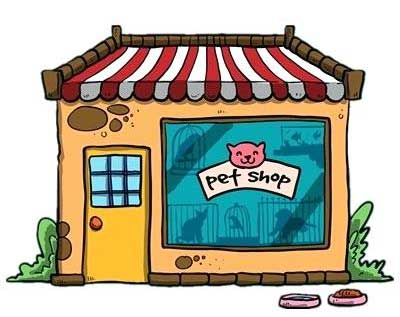

Advantage of animals
1. Ecological Balance Biodiversity: Animals play crucial roles in maintaining ecosystems. They help pollinate plants, disperse seeds, and control pests. Food Chains: Animals are integral to food webs, contributing to the balance of nature. 2. Economic Benefits Agriculture: Livestock and poultry provide food, clothing, and other products. Bees and other pollinators are essential for many crops. Tourism: Wildlife attracts tourists, supporting local economies through eco-tourism and conservation efforts. 3. Social and Cultural Significance Companionship: Pets provide emotional support and companionship, improving mental health and reducing loneliness. Cultural Symbolism: Many cultures revere animals, incorporating them into folklore, art, and traditions. 4. Scientific Research Medical Advancements: Animals are often used in research to develop medical treatments and understand diseases, leading to breakthroughs in human health. Conservation Studies: Studying animals helps us understand environmental changes and the impacts of human activity. 5. Education and Awareness Learning Opportunities: Animals can teach us about biology, ecology, and conservation, fostering a greater appreciation for nature. Awareness Campaigns: Animal welfare organizations raise awareness about environmental issues, promoting conservation efforts. 6. Therapeutic Benefits Animal-Assisted Therapy: Interacting with animals can help in therapeutic settings, assisting with physical and mental health recovery. Stress Reduction: Spending time with animals is known to reduce stress and anxiety, promoting overall well-being. 7. Cultural and Artistic Inspiration Animals have inspired countless works of art, literature, and music, enriching cultural heritage and creativity..